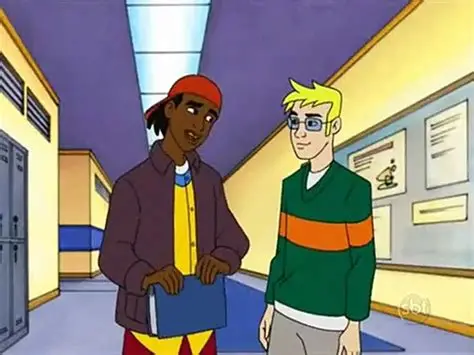

Os Corredores da Dakota Union High School

Virgil Hawkins era um estudante exemplar com talento natural para as ciências exatas, equilibrando notas altas com o convívio diário com seu melhor amigo, Richie Foley.
Apesar do ambiente acadêmico favorável, as rivalidades entre as gangues da zona norte e sul começavam a infiltrar o ambiente escolar, exigindo atenção constante dos alunos.
"Virgil sempre teve raciocínio rápido para escapar de conflitos sem recorrer à violência."
— Declaração registrada por Richie Foley nos arquivos escolares.